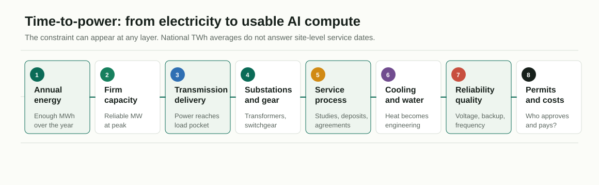

Core thesis
Power is no longer background infrastructure. It is a deployment gate.
The research narrowed the question from "electricity for AI stocks" to a more useful mechanism: power availability by location, date, reliability standard, cooling design, and cost-allocation rule.
The defensible claim
AI and broader data-center growth are making electricity, grid interconnection, cooling, and firm-capacity planning more important in concentrated regions through 2030. This can reshape public-market narratives, but it does not determine company-level equity returns.
Best label
Regional time-to-power
Weak label
Global electricity scarcity
DOE/LBNL, IEA, EIA, NERC, FERC, PJM, utility disclosures, and filings support the direction.
Mechanisms are clear; economics depend on contracts, regulation, demand conversion, and execution.
Valuation, margins, customer concentration, policy, and timing can redistribute or erase economics.
| Question | Answer | Effect on the web report |
|---|---|---|
| Is this global electricity scarcity? | Evidence favors regional, temporal, deliverable-power constraints. | Lead with time-to-power. |
| Is all data-center load AI load? | No. Sources mix AI, cloud, enterprise IT, crypto, and other large loads. | Separate total data centers, AI-ready capacity, and AI workload electricity. |
| Do announced MW equal real load? | No. Requests, forecasts, contracts, energized MW, and MWh are different evidence stages. | Tag major numbers by evidence stage. |
| Do bottlenecks automatically create stock winners? | No. Exposure is not profit capture. | Use mechanisms, metrics, and failure modes, not rankings. |
Evidence map
The headline numbers are large, but the labels matter.
Switch between U.S., global, AI-attribution, and regional evidence. The page preserves the report's evidence-stage caveats instead of treating all megawatts as equal.
United States: actual use and scenario range
DOE/LBNL estimates U.S. data-center electricity use rose from 58 TWh in 2014 to 176 TWh in 2023, reaching 4.4% of U.S. electricity consumption. Its 2028 range is 325-580 TWh, or 6.7%-12.0%.
Evidence stage: actual-consumption estimate for 2023; scenario model for 2028. Total data centers, not AI-only.
Global: material, not dominant
IEA estimates global data centers consumed about 415 TWh in 2024, roughly 1.5% of global electricity. Its Base Case reaches about 945 TWh in 2030, just under 3%.
Evidence stage: IEA model estimate and scenario. This is why the global headline should not be "the world is running out of electricity."
Global framing
Share is modest. Concentration is not.
Global averages can hide acute load pockets where power, substations, permits, water, and grid rules decide deployment timing.
Total data-center demand
Electricity used by all data-center workloads and infrastructure.
Safe example: DOE/LBNL U.S. 176 TWh in 2023.AI-capable capacity
Capacity designed or upgraded for high-density AI workloads.
Useful for powered shells, liquid cooling, and rack density.AI workload electricity
Electricity directly attributable to training, inference, serving, and related AI workloads.
Use only when the source explicitly identifies it.IEA supports AI as a major driver: accelerated servers, mainly AI-driven, account for almost half of the net global data-center electricity increase to 2030. That is not the same as all data-center growth.
| Region or case | Evidence stage | What it shows | Caveat |
|---|---|---|---|
| PJM / Northern Virginia | Requested / forecast / adjustment | Large-load process supports data-center growth of up to about 30 GW between 2025 and 2030 after filtering non-firm requests. | Not energized load; no strong price-causality claim is used. |
| AEP Ohio | Tariff / contracted / company update | Data-center tariff shows load-study fees, collateral, minimum demand charges, and long contract terms. | One service territory; company disclosure. |
| Dominion / Northern Virginia | Utility planning / forecast | Data-center load is central to planning in a major U.S. cluster. | IRPs are planning snapshots, not approval for every resource. |
| Texas / ERCOT | Forecast / large flexible load | Large-load growth includes data centers and crypto, proving why all large load should not be labeled AI. | AI-specific share is uncertain unless source identifies it. |
Bottleneck stack
Annual energy is only one layer.
The useful question is whether power can become usable compute at a specific site by a specific date. Each layer can be the limiting step.

Annual energy
Enough MWh/TWh over the year for fuel supply, generation additions, and carbon matching.
Peak and firm capacity
Reliable MW during peaks, contingencies, low-renewable hours, and winter stress events.
Transmission deliverability
Power has to reach the load pocket; cheap generation elsewhere may not help.
Substations and equipment
Transformers, breakers, switchgear, feeders, cable, and substations can hold up service dates.
Interconnection process
Studies, network upgrades, agreements, and deposits separate speculative MW from likely load.
Cooling and water
Electricity becomes heat; rack density depends on thermal design and local constraints.
Reliability and power quality
Voltage, frequency, redundancy, backup, and dynamic load behavior matter for expensive clusters.
Permits and cost allocation
The decisive question may be who pays, who approves, and who bears reliability obligations.
Public-market ecosystem
Exposure is broad. Profit capture is not automatic.
Representative companies are examples of exposure categories only. This section is not a recommendation, ranking, or valuation framework.
13 exposure categories shown.
AI accelerators and semiconductors
NVIDIA, AMD, Broadcom, Marvell, Intel, TSMC, ASML, Samsung Electronics, SK Hynix, Micron.
- Mechanism
- Power constraints shift competition toward compute per MW, performance per watt, rack integration, and liquid-cooling compatibility.
- Watch
- Performance per watt, HBM supply, rack power, deployment delays, customer concentration.
- Failure mode
- GPU demand can outrun powered capacity; export controls and model economics can dominate power.
Hyperscalers and cloud platforms
Microsoft, Amazon/AWS, Alphabet/Google, Meta, Oracle, Alibaba, Tencent.
- Mechanism
- They create demand and must secure power, land, cooling, PPAs, leases, and grid service.
- Watch
- Capex, finance leases, depreciation, utilization, AI revenue conversion, PUE/WUE.
- Failure mode
- Delayed capacity, higher capex, local opposition, and underutilization.
Specialized AI clouds / GPU infrastructure
CoreWeave, Nebius, IREN, Hut 8, Applied Digital.
- Mechanism
- Power-secured GPU capacity can become scarce infrastructure.
- Watch
- Active MW, utilization, contracted revenue, debt/lease structure, customer concentration.
- Failure mode
- Delayed power, high leverage, GPU obsolescence, customer concentration.
Colocation and data-center operators
Equinix, Digital Realty, Iron Mountain, GDS, VNET.
- Mechanism
- Powered capacity, interconnection, cooling density, and pre-leased MW become core products.
- Watch
- MW under construction, preleasing, vacancy, rent per kW, service dates.
- Failure mode
- Grid delays, customer self-build, water/permitting limits, overbuilding if demand slows.
Regulated electric utilities
Dominion Energy, Duke Energy, Southern Company, AEP, Entergy, Exelon/Pepco, FirstEnergy, Xcel, PG&E, Sempra.
- Mechanism
- Large-load growth can increase planning needs, capex, sales, and rate-base discussions.
- Watch
- Signed service agreements, tariffs, rate cases, reserve margins, customer deposits.
- Failure mode
- Regulatory lag, disallowed costs, affordability backlash, speculative forecasts.
Independent power producers
Constellation, Vistra, Talen, NRG, AES, Brookfield Renewable, RWE, Engie.
- Mechanism
- Firm power, nuclear, gas, storage-backed renewables, and PPAs can become more valuable in constrained regions.
- Watch
- PPA terms, capacity prices, plant availability, restart/uprate milestones.
- Failure mode
- Regulatory restrictions, fuel risk, project delays, cost-allocation disputes.
Grid equipment and electrical infrastructure
Eaton, Schneider Electric, Siemens Energy, GE Vernova, ABB, Hubbell, Powell, nVent, Quanta Services, Prysmian.
- Mechanism
- Transformers, switchgear, substations, cable, and EPC execution sit close to the bottleneck.
- Watch
- Backlog quality, book-to-bill, margins, lead times, end-market mix.
- Failure mode
- Input inflation, manufacturing expansion risk, customer concentration, cycle reversal.
Critical power systems
Vertiv, Eaton, Schneider Electric, ABB, Siemens, Legrand, nVent, Powell.
- Mechanism
- Converts delivered MW into resilient rack power through UPS, PDUs, busway, modular power, and services.
- Watch
- Orders, backlog conversion, service attach, high-density rack support.
- Failure mode
- Deployment delays push revenue recognition; large customers can pressure margins.
Cooling and thermal management
Vertiv, Modine, Carrier, Johnson Controls, Trane Technologies, Lennox, SPX Technologies, nVent.
- Mechanism
- AI density raises need for liquid/hybrid cooling, CDUs, chillers, water management, and thermal engineering.
- Watch
- Liquid-cooling orders, rack density, WUE/PUE, retrofit vs new-build mix.
- Failure mode
- Liquid cooling is not a universal energy or water solution; end markets are mixed.
Backup, onsite power, and microgrids
Caterpillar, Cummins, Generac, Bloom Energy, GE Vernova, Siemens Energy, Tesla storage.
- Mechanism
- Slow interconnection and high reliability needs can increase backup, bridge, and onsite power demand.
- Watch
- Generator backlog, emissions permits, runtime limits, BESS attachment, fuel logistics.
- Failure mode
- Bridge power can be expensive, emissions-constrained, or politically contested.
Gas turbines and gas infrastructure
GE Vernova, Siemens Energy, Mitsubishi Heavy Industries, Baker Hughes, Kinder Morgan, Williams, EQT, Chevron, Exxon Mobil.
- Mechanism
- Gas can provide near-term firm capacity in some regions.
- Watch
- Turbine slots, COD schedules, pipeline capacity, fuel prices, air permits.
- Failure mode
- Supply, deliverability, emissions rules, and stranded-asset risk.
Nuclear, uprates, restarts, and SMRs
Constellation, Vistra, Talen, Cameco, Centrus, BWX Technologies, Oklo, NuScale.
- Mechanism
- Firm clean-power demand increases strategic interest in existing nuclear and credible restarts.
- Watch
- NRC milestones, PPA structure, restart execution, fuel supply, uprate approvals.
- Failure mode
- SMRs are mainly post-2030 optionality unless specific projects prove otherwise.
Renewables, storage, and flexibility
NextEra Energy, Brookfield Renewable, AES, Clearway, First Solar, Nextracker, Fluence, Tesla.
- Mechanism
- Renewable PPAs can supply energy; storage and flexibility help deliverability.
- Watch
- PPA volume, interconnection conversion, storage duration, curtailment, hourly matching.
- Failure mode
- Annual matching does not solve local 24/7 load; queues and curtailment can limit delivery.
Who gets paid vs who carries risk
The bottleneck creates invoices before it creates returns.
A useful public-market lens is not "winner/loser." It is which actors can bill for scarce infrastructure, and which actors carry timing, utilization, regulatory, or affordability risk.
More likely to get paid when...
- They sell scarce physical delivery assets: transformers, switchgear, substations, cable, UPS, busway, chillers, CDUs, EPC services.
- They control already powered sites, firm capacity, or high-quality interconnection positions.
- Contracts include deposits, minimum demand charges, long service terms, or take-or-pay style economics.
- They can solve density: power distribution, liquid/hybrid cooling, or high-reliability rack environments.
More likely to carry risk when...
- They commit large capex before power, permits, customers, or utilization are secured.
- They depend on speculative load requests that may never become energized MWh.
- Regulators push upgrade costs onto shareholders, all ratepayers, or data-center customers in ways that slow demand.
- Efficiency gains or weaker AI monetization reduce electricity growth relative to high-end scenarios.
Bull and bear cases
Two things can be true: the bottleneck is real, and the narrative can be overextended.
These are educational scenario lenses, not investment calls.
Time-to-power stays tight
Energized MW lags requests; large-load tariffs spread; grid equipment and cooling backlogs stay elevated; hyperscaler capex remains high; firm power gets more valuable in constrained regions.
Regional, staged friction
Demand grows materially, but the tightness is uneven. The most important signals are conversion from requests to contracts to energized load, plus cost-allocation rules.
Efficiency, attrition, or supply catch-up
Actual MWh tracks the low end of scenarios; AI output per MW improves fast; project pipelines de-rate; generation, storage, equipment, and flexibility catch up in key regions.
Signals to watch
Track conversion quality, not just headlines.
The best ongoing evidence separates actual load from announcements and tests whether infrastructure converts into usable, monetized compute.
Energized MW and actual MWh in data-center-heavy territories
Separates real usage from announced campuses and power requests.
Requested vs forecast vs contracted vs energized MW
Shows attrition, double-counting, and planning discipline.
FERC, NERC, PJM, and state commission updates
Tracks reliability, co-location, tariff, and cost-allocation rules.
Large-load tariffs, collateral, minimum bills, curtailability terms
Shows who pays for upgrades and whether demand can flex.
Transformer, switchgear, cable, substation, and EPC backlog quality
Measures physical delivery constraints, but use official or clearly labeled industry estimates.
Hyperscaler capex, finance leases, depreciation, utilization, AI revenue conversion
Tests whether expensive infrastructure becomes productive revenue, not just spending.
PUE, WUE, rack density, liquid-cooling adoption, and local water constraints
Shows whether delivered power becomes usable compute.
PPA deliverability, hourly matching, storage attachment, interconnection status
Tests whether clean-energy procurement actually solves local power needs.
Uncertainty and guardrails
What would make the thesis wrong or overstated?
Efficiency and output per MW
Better chips, compression, routing, batching, sparsity, and serving software can reduce electricity per useful AI task.
Project overcounting
Announcements, power requests, letters of intent, signed agreements, and energized load are different evidence stages.
Non-AI confounders
Crypto, manufacturing, EVs, hydrogen, LNG, population growth, and broader electrification can appear in utility forecasts.
Regulatory cost allocation
If large-load customers internalize upgrade costs, the bottleneck may slow projects rather than enrich utility shareholders.
Supply catch-up
Equipment, generation, storage, transmission, cooling, and flexible load could improve faster than expected in key regions.
Narrative and valuation risk
Physical bottlenecks can be real while market narratives are overextended. Revenue exposure is not earnings exposure.
Claims deliberately not used as firm evidence
- Strong PJM price-causality claims.
- NERC 1,500 MW incident claim.
- TVA data-center load-share claims.
- Official-sounding transformer deficit percentages without narrower verification.
- Any claim that all data-center growth is AI or that announced GW equals actual load.
Primary sources
Source-backed, with evidence boundaries visible.
Tier 1
DOE/LBNL: 2024 United States Data Center Energy Usage Report
U.S. historical data-center electricity, 2028 scenario range, cooling and water context.
Tier 1 IEA: Energy and AIGlobal data-center electricity, 2030 base case, AI-energy nexus, concentration.
Tier 1 EIA: January 2026 STEO releaseU.S. electricity demand growth and data centers as a major driver.
Tier 1 NERC: 2025 Long-Term Reliability AssessmentReliability, resource adequacy, large-load growth, and planning caveats.
Tier 1 FERC: 2025 State of the MarketsFederal market framing, large-load characteristics, and capacity context.
Tier 1 FERC: PJM co-location actionEvidence that data-center co-location is a market-design and cost-allocation issue.
Tier 1 PJM: 2025 Long-Term Load Forecast ReportPJM load-forecast and large-load adjustment context.
Tier 1 AEP Ohio: Data Center TariffConcrete example of tariff terms, load studies, collateral, and minimum demand charges.
Tier 1 Microsoft: 2025 Annual ReportHyperscaler data-center scale and energy as a strategic dependency.
Tier 1 Constellation: Crane Clean Energy Center announcementExample of firm clean-power procurement tied to data-center demand.
No matching sources. Try a broader term.